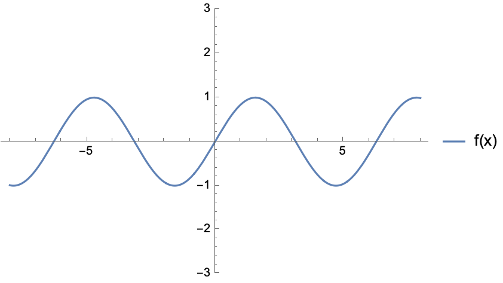
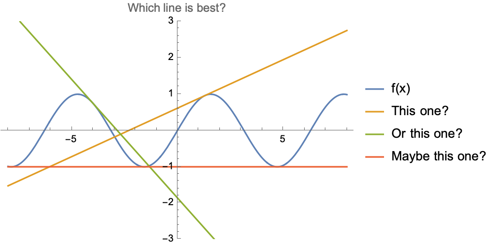

State-space representation#
In many real-world systems, we need to keep track of several variables to fully describe the “state”—that is, the minimum amount of information needed to predict the system’s future evolution, given knowledge of its current configuration and inputs. In addition, there may be multiple inputs available to influence how the state evolves over time. For instance, in the case of a car, key state variables might include position, heading, and velocity. The motion of the car can be affected by control inputs such as throttle/brake and steering.
In practice, although a system’s state may be described by many variables, we are often able to directly observe or measure only a subset of them. These observations or measurements, which provide us with partial information about the system’s state, are referred to as outputs.
When a system is influenced by multiple inputs and can be measured or characterized by multiple outputs, we refer to it as a MIMO (Multiple-Input, Multiple-Output) system. Control design for MIMO systems is inherently more complex than for single-input single-output (SISO) systems, since it requires careful management of the interactions among many variables and inputs.[1]
If your previous experience with feedback control was limited to undergraduate courses, you likely worked primarily with SISO systems.
A powerful and systematic way to represent MIMO systems is through the state-space framework. In this approach, we model the dynamical system using a set of state variables that collectively encode all the essential information needed to predict how the system will evolve in response to inputs. The evolution of these state variables over time is governed by first-order differential or difference equations, which describe how current states and external inputs (such as controls or disturbances) determine the system’s future behavior. By carefully selecting the state variables, we ensure that the model captures the system’s critical characteristics, enabling us to accurately forecast its evolution.
State-space definition#
Given a system of interest, let \(x \in \mathbb{R}^n\) denote the state vector, where \(n\) is the smallest number of variables needed to fully characterize the system at any given time. These variables capture exactly the information required by the user or engineer to understand and predict the system’s evolution and to make informed decisions.
Example: State representation for a car
Consider the case of a car. There are several possible state-space representations, each reflecting a different level of modeling detail. For a simple model, the state might be chosen as \([x, y, \theta, v]^T\), representing the car’s position, heading, and velocity. This selection suffices if our primary interest is tracking the car’s location, its direction, and how fast it is moving.
However, if we are modeling a race car, it may be important to include additional variables that reflect the vehicle’s health and performance limits, such as tire wear, engine temperature, or other diagnostic measures. These extra variables can influence how much power or acceleration the car is able to deliver, and thus directly affect how its velocity or dynamics evolve over time.
Example: State representation for a quadrotor
Consider the example of a quadrotor. There are several valid ways to represent its state, depending on the desired level of modeling detail. For a basic description of the quadrotor’s motion, the state vector might be chosen as \([x, y, z, \phi, \theta, \psi]^T\), capturing its position in space and orientation—namely, roll (\(\phi\)), pitch (\(\theta\)), and yaw (\(\psi\)). This representation suffices if our primary interest is the quadrotor’s location and its attitude.
However, for applications involving high-performance flight, it may be important to model additional variables, such as translational and angular velocities, individual rotor speeds, or battery charge level. These extended state variables directly impact the system’s ability to generate thrust and moments, and thus play a critical role in determining the quadrotor’s maneuverability and endurance.
Let \(u \in \mathbb{R}^m\) represent the control input vector, where \(m\) specifies the number of independent input channels or actuators influencing the system.[2] For a continuous-time system, the evolution of the state can be described by a first-order differential equation:
In mechanical and many physical systems, this first-order differential equation captures the kinematics or dynamics—that is, it details how the current state and control inputs determine the rate of change of each state variable over time.
For now, let us assume the system is fully observable—that is, we are able to measure every state variable directly. In reality, this is often not the case: typically, only a subset of the state’s components are accessible through measurements. To recover information about unmeasured states, we employ estimators or observers (such as the Kalman filter), leveraging available sensor data to construct an estimate of the full system state.
The state-space framework is especially powerful for MIMO systems, as it elegantly captures the interplay of multiple inputs and outputs, and serves as the foundation for modern control strategies—including state feedback, observers, and optimal control approaches.
It is important to note that the definition of the “state” is nuanced and context-dependent. How should one choose the state variables? This choice depends on the goals of modeling and the desired level of detail. High-fidelity models may require a large number of state variables to capture complex system behavior, resulting in greater modeling accuracy. However, more detailed models are also more challenging to identify, simulate, and control, especially as the system’s dimensionality increases. Thus, there is an inherent trade-off between model fidelity and computational or practical tractability.
Furthermore, the choice of state variables is not unique. For example, in the context of linear dynamical systems, any invertible transformation of the state variables yields an equivalent description of the system dynamics. Such coordinate changes (e.g., choosing the eigenbasis) can substantially simplify analysis and design. As an illustrative example, if you have encountered the concept of vibrational “modes,” these mode shapes and their associated frequencies arise from a coordinate transformation of the state-space representation.
The complexity and structure of the dynamics function in (1) play a crucial role in determining how difficult it will be to analyze the system and design an effective controller. Simpler or more structured dynamics often make analysis and control design more tractable, while highly nonlinear or intricate dynamics can significantly increase the challenge. Next, we describe some common types of dynamics.
Control-affine dynamics#
A system is said to have control-affine dynamics if its evolution can be expressed as
where the control input \(u\) enters the equation linearly, while all nonlinearities and autonomous effects—collectively known as the drift dynamics—are contained in the function \(f_0(x, t)\). The matrix \(B(x,t)\) maps the control input to its influence on the state.
This structure is significant because many modern control techniques, such as feedback linearization and optimal control, rely on the system being control-affine.
Importantly, given general nonlinear dynamics where the control does not appear in an affine fashion, it is sometimes possible to convert the system into control-affine form by augmenting the state vector with the control variables themselves, and then treating the control derivatives (e.g., \(\dot{u}\)) as the new control inputs. This transformation can allow us to apply tools and insights developed for control-affine systems even in situations that appear to be more complex at first glance.
Linear state-space model#
When a system is linear, its dynamics can be succinctly expressed in the following form:
where:
\(x(t)\) is the state vector, capturing the internal condition of the system at time \(t\).
\(u(t)\) is the input (or control) vector, representing external signals or commands applied to the system.
\(y(t)\) is the output vector, corresponding to the quantities we can measure or observe.
\(A\), \(B\), \(C\), and \(D\) are matrices with dimensions determined by the number of states, inputs, and outputs; these matrices encode the structure of the system’s dynamics and its input-output relationships.
The first equation describes the evolution of the system’s internal state, while the second relates the state and control inputs to the measured outputs. Often, it’s convenient to assume the entire state is measured directly (i.e., \(y(t) = x(t)\)), but in general, only a subset of the state variables are accessible; the output equation \(y(t) = Cx(t) + Du(t)\) accommodates this generality.
Linear systems are especially appealing because critical properties—such as stability, controllability, and observability (as discussed in AA/EE/ME 547)—can be systematically analyzed using the \(A\), \(B\), \(C\), and \(D\) matrices.
Linearization#
In practice, however, most real-world systems are fundamentally nonlinear. To make use of the powerful analytical and computational tools available for linear systems, we often linearize a nonlinear system about a particular operating point—typically an equilibrium state and control (i.e., \((x_0, u_0)\))—and analyze the linearized dynamics locally around this point. It is important to recognize that such linearizations are only accurate within a limited neighborhood of the linearization point. Nevertheless, sequentially updating the linearization as the system evolves and employing linear control methods in this local context has proved to be remarkably effective and is a standard approach in modern control practice.
Linearization is the process of approximating a nonlinear dynamical system, \(\dot{x} = f(x, u)\), with a linear system of the form \(\dot{x} = Ax + Bu\) that closely represents the original dynamics near a particular operating point.
To illustrate the concept of linearization, let’s consider a simple example with a single scalar state:
The figure below shows this function for \(x\) ranging from \(-8\) to \(8\):

Suppose we wish to approximate this nonlinear function with a straight line. Clearly, any such linear approximation can only match the original function locally. There is no single line that can closely approximate \(\sin(x)\) everywhere. Instead, each linear approximation is valid only near a specific point. (Can you point out which region each line is a good approximation of the nonlinear function?)

Therefore, we must choose the point at which we want the linear approximation to be accurate. When we linearize a system, we always do so “about a point” of our choice. At that specific point, the approximation matches the original function exactly; nearby, the linear model is typically a good local representation, but as we move farther away, the approximation quality diminishes. Once we’ve selected the expansion point, the linear approximation is found by applying a first-order Taylor series about that point.
Taylor series#
The Taylor series is a powerful mathematical tool that allows us to approximate complicated functions by expanding them as an infinite sum of terms, each based on the function’s derivatives at a single point. Intuitively, the Taylor series provides a local polynomial approximation to a function, capturing its value and the shape (slope, curvature, etc.) near the point of expansion. This concept is crucial in control and systems theory, as it helps us approximate nonlinear systems with linear (or affine) models for analysis and controller design.
For a scalar-valued function \(f : \mathbb{R} \to \mathbb{R}\), the Taylor series about a point \(x_0\) is:
The first term is the value at the expansion point, the second term uses the first derivative to capture the slope, and higher order terms use higher derivatives to account for curvature and beyond.
For a vector-valued function with vector-valued inputs, such as \(\mathbf{f} : \mathbb{R}^n \to \mathbb{R}^m\), the Taylor series expansion of \(\mathbf{f}\) about a point \(x_0 \in \mathbb{R}^n\) is given by:
Here, \(J_{\mathbf{f}}(x_0)\) is the Jacobian matrix of \(\mathbf{f}\) evaluated at \(x_0\), which contains all first-order partial derivatives and has dimensions \(m \times n\). The term \(H_{\mathbf{f}}(x_0)\) represents the collection of Hessian matrices (one \(n \times n\) Hessian for each output component of \(\mathbf{f}\)), capturing the second-order partial derivatives. The linear (first-order) term involving the Jacobian gives the best local linear approximation, while the second-order (quadratic) term with the Hessians refines the local approximation by accounting for curvature.
Linearizing dynamics#
In the analysis of dynamical systems, we frequently employ a first-order (linear) approximation, retaining only the terms involving the first derivatives. This yields a local linear model that is valid in the vicinity of a chosen operating point.
Suppose we are interested in linearizing a set of nonlinear state-space dynamics \(\dot{x} = f(x, u, t)\) about a particular state and control \((x_0, u_0)\). By performing a first-order Taylor expansion around \((x_0, u_0)\), we have:
where the Jacobian matrices are defined as:
and
Here, \(\nabla_x f(x, u, t)^T\) and \(\nabla_u f(x, u, t)^T\) are the Jacobians of the dynamics with respect to the state and control, respectively. Each row of a Jacobian corresponds to the gradient vector of a particular component of \(f\).
This first-order Taylor expansion yields an affine system:
where \(A\) and \(B\) are the Jacobian matrices, and \(C\) is a constant vector. Although this is technically affine (not strictly linear), in the context of optimization-based control (discussed later), this distinction has little practical impact on how we solve the problem.
Linearization about an equilibrium point#
Now, consider linearizing about an equilibrium point \((x_0, u_0)\), where \(f(x_0, u_0, t) = 0\). Let the error state be \(\delta x = x - x_0\), and the error control input be \(\delta u = u - u_0\). The error dynamics are:
This can be written as a linear system:
where \(A\) and \(B\) are the Jacobian matrices evaluated at the equilibrium point with respect to the state and control, respectively.
In summary, when you linearize a system around an equilibrium point and focus on the system’s behavior in the vicinity of that point, you can approximate the dynamics using a linear system. This makes analysis and controller design significantly more tractable near the equilibrium.
Time discretization#
Up to this point, we’ve focused on continuous-time dynamics, described by first-order differential equations. However, it’s often helpful to consider discrete-time dynamics, where the system evolves according to first-order difference equations:
Here, \(k\) represents a time step index rather than a specific instant in time. Just as with continuous-time systems, discrete-time dynamics can also be linear, control affine, or nonlinear.
Discrete-time models are particularly appealing when designing controllers using optimization-based methods. By discretizing time, we reduce the problem to optimizing over finite sequences of states and inputs, rather than over continuous-time functions—making the problem much more tractable in practice.
But how do we actually obtain a discrete-time model from a continuous-time system? The answer lies in integration. Consider the following relationship:
Equation (3) shows that the next state is obtained by starting from the current state and integrating the continuous-time dynamics over a time interval of length \(\Delta t\).
However, a challenge quickly emerges: evaluating this integral exactly is often far from straightforward! For some especially simple systems, you might be able to solve the integral analytically. In most practical scenarios, though, you’ll want to use numerical integration techniques such as Euler or Runge-Kutta methods, which are computationally efficient and widely available. Modern computational tools—including automatic differentiation—can also be leveraged to rapidly compute Jacobians and facilitate the linearization of discrete-time systems.
(You’ll get hands-on experience with these approaches in Homework 1.)